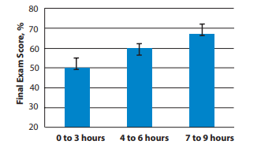

Introduction
In the life of a typical college student, work, study and play, is the average schedule, how to do it all in a 24 hour day and include necessities such as eating, sleeping, and maintaining self-care is not easy. Working 20 or more hours a week, taking a hard course load, and managing a social life is very draining, and our bodies need time to rest and recharge, but when these activities take too much time, it leads people to not be ready for the new day ahead. Several studies have proven that lack of sleep will right away affect cognitive ability and judgement and over a prolonged period could lead to obesity and diabetes. Without sleep students have been proven to not perform as well the following day. Another distraction in the day includes use of technology, most modern countries use technology for everyday social interactions and personal use, and with the improvements to technology comes the advancements to different health consequences which include insomnia and brain tumors. Technology is an incredible source of information; it takes a lot of our time as we enjoy “binge watching” television, making TikTok videos, and mindlessly scrolling through different websites in search of information on celeberties like Kim Kardashian, and these activities can distract us from our real life activities and interactions. Between lack of sleep and use of technology I found the question of how do distractions such as activities and technology affect student preparedness for class and overall performance in class and how does technology affect mental and physical health of student users?
Research
Imagine waking up each morning and automatically using Snapchat for an hour, then getting ready for school where you hang out with friends and study, then you go to an afterschool activity followed by dinner and the day is finished with a mixture of homework, snapchat, and netflix, when do you sleep for rest? Research has shown that lack of sleep can lead to depression, early aging, quick mood changes, lack of motor skills, exhaustion and more. Vincent Coletta included in an article discussing student success on an examination based on sleep received before to the test:
Exam Scores vs. Sleep
Good education requires a good night of sleep, without it, students lack core concepts and skills, students also develop poor study habits and learn to use a quick memory --used for committing information to memory that will last a short time-- opposed to a lasting memory --used for true understanding of information that will last a while. Lack of sleep has many negative effects on the body and mental health of individuals; such effects are as simple as exhaustion while others are as serious as death. Drug Invention Today found, “sleep restriction may favor the development of obesity.[12] Sleep deprivation can be linked to serious accidents, poor job, or school performances and can substantially lower an individual’s overall quality of life. Lack of sleep disrupts the brain’s ability to balance emotions and thinking abilities, lowers the body’s natural defenses, and increases the chances of developing chronic medical problems. (Gayatri Devi, R.; Hothi Priya, A.; Pretty, R.).” This piece furthers the idea that sleep effects positive cognitive function which leads to better judgement and motor control. If a student walks into class with good rest, their chances of understanding material, being able to recall information learned, and ability to dig deeper grows significantly. Results of sleep deprivation include many severe issues which if maintained for an extended amount of time, could lead to earlier death and lack of full cognitive understanding.Health Literacy presents:
Students do not get enough sleep to be successful in school. There are three factors related to where a student’s time is spent, technology, social opportunities, and studious activities. Social opportunities include school plays and athletics, activities with friends, youth groups, and more. These opportunities are equally important to school as life will require the ability to work with others. Technology allows people to connect through instant messaging and social media allowing people in China to instantly communicate with people in Mexico. Studious activities include studying for classes, tutoring peers, and communicating with educators about ideas, passions, and questions. Technology has opened the door to shared educations between educators around the world. One educator included, “when technology is introduced into the classroom, it becomes one of the many classroom instruments within the grasp of educators and students, and credible researchers have indicated that isolating the impact of technology from the "human factor" in the classroom is a formidable challenge. (Canuel).” Preventing use of technology in the classroom will lead to deficits in education as technology will be essential for modern learning through activities, word proceesing, and communication. Technology allows for mass communication; nobody is out of reach when a Wi-Fi signal and mobile device is present. Students can contact with pen pals in foreign countries and can collaborate for mutual understanding of different cultures and languages, students can contact businesses and future places of work to gain information and interviews for projects, and students can formulate their own ideas found from information and research done across the world. Students can find simulators for science projects, software to build 3d models, and type well written and edited papers. Essentially technology provides ease of access to resources and information/
Technology in modern society is used by millions of people all over the world, although everyday use is different for everyone, society pushes technology into a few main categories, access to information, social interaction, and individualized activities. The future will be built on technology which will be further utilized in education. Technology has the power to bring information to a user’s pocket, when mixed with education, it allows for students to learn about anything that a students’ curiosity leads to. Technology will create the future, but for technology to become this essential education on technology is needed, “nine out of 10 students indicated that using technology in the classroom would help prepare them for the digital future.§ By teaching students skills like PowerPoint, you can help set your students up for success. Introducing instructional technology in the classroom at a young age can help prepare students for future digital demands (“Top 5 Benefits of Technology in the Classroom”).” This source speaks to the idea that technology will only continue to develop and education will need to use it in order to educate on the uses of it as well as access the powerful resources and communications technology provides. Technology is also a tremendous resource for educators as it contains numerous online activities, interactives, and worksheets. Thanks to these resources education can evolve with technology and education will no longer be individualized; curriculems can be merged, lessons shared, and students gaining understanding based on their needs opposed to their teachers needs. Individualized teaching and accomodations can be provided to students as teaching styles can easily be shared and compared.